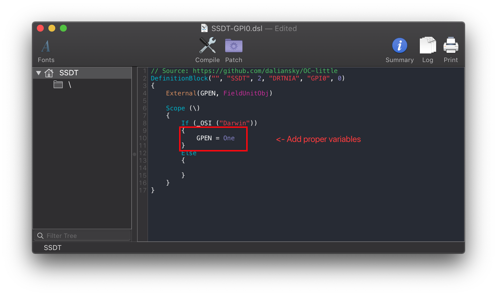
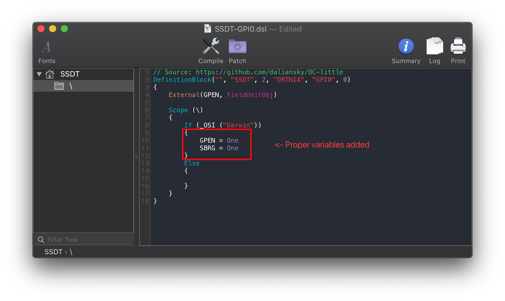

Last modified: Tue Jun 02 2020 13:56:37 GMT+0000 (Coordinated Universal Time)
Fixing Trackpads: Manual
Finding the ACPI path
Finding the ACPI pathing is quite easy actually, first open your decompiled DSDT you got from Dumping the DSDT and Decompiling and Compiling with either maciASL(if in macOS) or any other text editor if in Windows or Linux(VSCode has an ACPI extension that can also help).
Next search for Device (GPI0). Should give you a result similar to this:

What we care about from this is the _STA method:
Method (_STA, 0, NotSerialized)
{
If ((GPHD == One))
{
Return (0x03)
}
Return (0x0F)
}
What we want is for this to always return 0x0F when booting macOS, so we want to make an SSDT that will return GPHD == Zero in macOS.
NOTE that you may have the other way around where GPHD needs to be set as One to return 0x0F. And your device name may also be different, don't throw random SSDTs in thinking it'll work
Here's some more examples:

With this example, we can see that we need both SBRG and GPEN to return One. If only one is present, it'll create some issues so in our SSDT we'll want to have both of them return One:
Edits to the sample SSDT
Now that we have our ACPI path, lets grab our SSDT and get to work:
From the second example, we'll want to set both GPEN and SBRG to One to allow it to operate in macOS:
Before:
If (_OSI ("Darwin"))
{
GPEN = One <- Change to the right variables
SBRG = One <- Change to the right variables
}

Following the example pathing we found, the SSDT should look something like this:
After:
If (_OSI ("Darwin"))
{
GPEN = One <- Proper variables
}

Compiling the SSDT
With the SSDT done, you're now ready to compile the SSDT!
Wrapping up
Once you're done making your SSDT, either head to the next page to finish the rest of the SSDTs or head here if you're ready to warp up: